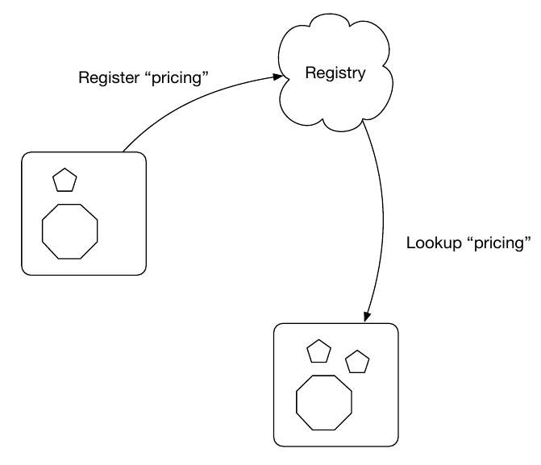

java -jar myruntime-hollow-swarm.jar my-app.warJava EE Microservices with
Peter Palaga, Red Hat
About me
Peter Palaga
Senior sustaining engineer for JBoss EAP at Red Hat
Occasional contributor to WildFly Swarm
Author of srcdeps https://github.com/srcdeps/srcdeps-maven
Agenda
Java EE
Microservices architectures
WildFly Swarm
Uberjar, Fractions
Demo: "Swarmify" a traditional EE Application
Configuration
Advanced topics
Secure access (Keycloak), Service registration and discovery, Load Balancing & Circuit Breaking, and API documentation (Swagger).
Java EE
Please raise your hand if you ever wrote or maintained
Java Servlet
EJB
JAX-RS Endpoint
Persistence with Hibernate
Java EE
(application developer’s perspective)
A set of API specifications
Servlet, EJB, JAX-RS, JPA, JTA, CDI, JMS, …
Packaged together as an Application Server
Several implementations
WildFly/JBoss EAP, WebSphere, WebLogic, …
History since 1999, latest EE 7 from 2013, MicroProfile
Microservices
Based on recent inovations
CI/CD
Linux containers
DevOps culture
Divide the functionality into reasonably small units, a.k.a. Microservices
Communication through REST or other language independent protocols
Isolation: Languages, Runtimes, Datastores, Release cycles, (DevOps) teams
Why Java EE still matters?
Robust, mature
Well understood (performance, scalability)
Standards compliant
Integrations
Investments (workforce, code in production)
How can Java EE fit in?
Java EE App Servers have to carry all APIs to get certified
Large in terms of disk space
(Some) slow to boot
(Some) require a lot of memory
… but my app does not need all of the APIs!
Welcome WildFly Swarm!
What is WildFly Swarm?
Open source project sponsored by Red Hat
A decomposition on WildFly Java EE Application Server
Take only the APIs you need (Just enough AppServer)
Package into a single runnable JAR (Uberjar) together with your application
WildFly Swarm core concepts
Uberjar
A self-contained JAR
Your application
The parts of WildFly necessary to run it
An internal Maven repository of dependencies
A piece of bootstrap code
Hollow Uberjar
Like Uberjar but contains no application code.
Useful with layered Linux containers:
Layer
n: Hollow Uberjar runtimeLayer
n+1: the application
Reduces the provisioning overhead and boot time
This is how WildFly Swarm implements MicroProfile
Fractions
Well-defined collections of capabilities
Expressed as Maven GAVs
Autodetected at build time or explicitly declared
Configurable, with reasonable defaults
May map to
WildFly subsystems (read: Java EE APIs)
Any external code (Jolokia, Netflix Ribbon, Swagger, …)
List of Fractions https://reference.wildfly-swarm.io/v/2017.3.3/
How to swarmify a WAR (1/2)
Let’s have a traditional Java EE application
<project>
...
<name>javaee7-simple-sample</name>
<packaging>war</packaging>
...
<dependencies>
<dependency>
<groupId>javax</groupId>
<artifactId>javaee-api</artifactId>
<version>7.0</version>
<scope>provided</scope>
</dependency>
</dependencies>
...How to swarmify a WAR (2/2)
<plugin> <!-- Add the wildfly-swarm-plugin -->
<groupId>org.wildfly.swarm</groupId>
<artifactId>wildfly-swarm-plugin</artifactId>
<version>2017.3.3</version>
<executions>
<execution>
<goals>
<goal>package</goal>
</goals>
</execution>
</executions>
</plugin>mvn package # build
ls target # check what has
... javaee7-simple-sample-swarm.jar ... # been built
java -jar javaee7-simple-sample-swarm.jar # run the uberjarWhere are the Fractions?
Autodetected by wildfly-swarm-plugin or declared explicitly:
<dependency> <!-- under dependencyManagement -->
<groupId>org.wildfly.swarm</groupId>
<artifactId>bom-all</artifactId>
<version>2017.3.3</version>
<type>pom</type>
<scope>import</scope>
</dependency>
...
<dependencies> <!-- Fraction GAVs -->
<dependency>
<groupId>org.wildfly.swarm</groupId>
<artifactId>jaxrs</artifactId>
</dependency>
<dependency>
<groupId>org.wildfly.swarm</groupId>
<artifactId>cdi</artifactId>
</dependency>
...Start from scratch

WildFly vs. WildFly Swarm
Disk size
| WildFly | WildFly Swarm (Uberjar) |
|---|---|
148 MB wildfly-master.zip 177 MB unzipped | 36 MB plain Servlet 47 MB above + JAX-RS 86 MB above + CDI 100 MB above + JPA/Hibernate |
Provisioning
| WildFly | WildFly Swarm |
|---|---|
Copy and unzip WildFly Boot Configure (datasources, …) Deploy the app | Copy the uberjar to the server Run the uberjar |
Missing parts
WildFly Swarm:
Will not run with a security manager
No EAR deployments
No clustering
Session replication, domain management, distributed caches, message broker
Areas open for contributions from the community
Configuration
Java API
public static void main(String[] args) throws Exception {
new Swarm().fraction(
new DatasourcesFraction()
.jdbcDriver("h2", (d) -> {
d.driverClassName("org.h2.Driver");
d.xaDatasourceClass("org.h2.jdbcx.JdbcDataSource");
d.driverModuleName("com.h2database.h2");
})
.dataSource("ExampleDS", (ds) -> {
ds.driverName("h2");
ds.connectionUrl("jdbc:h2:mem:test;"
+ "DB_CLOSE_DELAY=-1;DB_CLOSE_ON_EXIT=FALSE");
ds.userName("sa"); ds.password("sa");
})
).start().deploy();
}Stages
logger: # project-defaults.yml file
level: DEBUG
swarm:
port:
offset: 10
---
project: # To specify the "development" stage,
stage: development # run with
logger: # java -jar my-swarm.jar -S development
level: DEBUG
swarm:
port:
offset: 50
---
project:
stage: production
logger:
level: INFO
...standalone.xml
Useful when migrating from a traditional WildFly deployment
Either
java -jar my-swarm.jar -c my-standalone.xmlOr package
standalone.xmlin your uberjar by placing it tosrc/main/resourcesEnsure that you have all subsystem fractions that you configure
Command line arguments and system properties
-b 192.168.1.104or-Dswarm.bind.address=192.168.1.104to bind to a specific network interface-Dswarm.port.offset=42to shift ports - e.g.8080 → 8122-Dswarm.context.path=/my-app- note that the default is/
... and many others
Advanced topics
Secure access with Keycloak
What is Keycloak
JBoss community project
Single sign-on (SSO) server and identity broker
How to secure with Keycloak
|
|
|
|
Service registration
<!-- pom.xml -->
<dependency>
<groupId>org.wildfly.swarm</groupId>
<artifactId>topology-consul</artifactId>
</dependency>/* Inside main() method */
JAXRSArchive deployment = ...
/* register */
deployment.as(TopologyArchive.class)
.advertise("my-time-service");java -Dswarm.consul.url=http://127.0.0.1:8500 -jar *-swarm.jarService discovery
Either directly through
ConsulClient.getAgentServices()Or via Netflix Ribbon integration
Netflix Ribbon
A REST inter-process communication library
Client-side load-balancing to other services
Several implementations: round Robin, response time weighted, random, …
Integration with Service Registries
Services referenced by name rather than host
Built-in failure resiliency via Hystrix
Netflix Ribbon Fraction
<!-- pom.xml -->
<dependency>
<groupId>org.wildfly.swarm</groupId>
<artifactId>ribbon</artifactId>
</dependency>Netflix Ribbon service client
// discovery by
@ResourceGroup( name="my-time-service" ) // <- service name
public interface TimeService { // lookup done
// by Consul fraction
@TemplateName("currentTime")
@Http(
method = Http.HttpMethod.GET,
uri = "/"
)
@Hystrix(
fallbackHandler = TimeFallbackHandler.class
)
RibbonRequest<ByteBuf> currentTime();
// Ribbon can provide an implementation
// of the TimeService
TimeService INSTANCE = Ribbon.from(TimeService.class);
}Swagger API Documentation
<!-- pom.xml -->
<dependency>
<groupId>org.wildfly.swarm</groupId> <!-- typically -->
<artifactId>swagger</artifactId> <!-- in combination -->
</dependency> <!-- with jaxrs -->/* Inside main() method */
SwaggerArchive archive =
ShrinkWrap.create(SwaggerArchive.class, "swagger-app.war");
/* Tell swagger where our resources are */
archive.setResourcePackages("org.myorg.myresources");Get the API Documentation
curl http://localhost:8080/swagger.json{ "swagger":"2.0",
"info":{"version":"1.0.0"},
"host":"localhost:8080",
"basePath":"/swagger",
"tags":[{"name":"time"}],
"schemes":["http"],
"paths": {
"/time/now": {
"get": {
"tags":["time"],
"summary":"Get the current time",
"description":"Returns the time as a string",
"operationId":"get",
"produces":["application/json"],
"parameters":[],
"responses": {
...WildFly Swarm Recap
Just enough Application Server
Uberjar or Hollow uberjar
Fractions to require and configure capabilites
WildFly Swarm Plugins for Maven and Gradle
Keep in touch
Documentation http://wildfly-swarm.io/
Examples https://github.com/wildfly-swarm/wildfly-swarm-examples
IRC channel #wildfly-swarm at freenode
Twitter @wildflyswarm